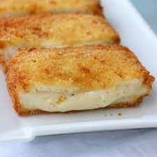

Fried Cheese

Fried Cheese
Fast and crunchy fried cheese is delicious and fast to prepare!
Ingredients
- 2 large eggs, beaten
- 1/4 cup water
- 50g wheat
- 100g bread crumbs
- 2 x 50g slice of any fat cheese
Steps
- Put bread, eggs, crumbs in separate container
- Take one slice to wheat
- Put it into container with eggs
- When it's covered take it into crumbs
- Again put it to eggs
- Finish with another putting into crumbs
- Repeat for the last slice
- Heat oil in a pan to 350deg celsium
- When oil is boiling put one slice in it
- When it's light-gray take it out and repeat for another slice
- Serve with tatar souce
Back on main page